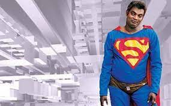

My team

SHAaRATHA

Hi! KZ here
Name : KREQ ZAVIN
Alias : Kottayam kunjachan
Agency : VOUGHT 2.0
Sector : Kottayam
Sup-Class : D-3
Origin Story Born and brought up in kottayam, kunjachan was a prodigy in science . He always had a fascination towards rubber that was found plenty in his locality, and often accompanied his father who was an estate worker. On completing his schooling he had a clear vision for his future. He attended the polymer engineering program at IIT Roorkee and graduated with a gold medal. He then left for the USA to do further research in his area of interest, polymer chemistry and nuclear physics. He was welcomed warmly in the highest of academic circles because of his pathbreaking ideas and research articles. He had built a name for himself and returned to his hometown, kottayam to provide something back to the society that had brought him up. He launched a corporation and a state of the art lab that fully utilized the rubber output of his town, inventing innovative products . Investors were aplenty and soon kunjachan was one of the big sharks of the International rubber industry. But he wanted to do the impossible linking his areas of expertise. Create a rubber armor that could block intense gamma radiation. He worked in his lab to create a prototype, and tested it himself. Things took a turn when the radiation bombarded through the suit knocking him out. He later woke up normally but was surprised to find what he had turned into. The radiation and rubber from the suit had transformed him into a superhuman. He was gifted with extreme elasticity and strength, was immune to electricity and radiation,and could even shapeshift. He realized the great responsibility that came along with his great powers.Hence a hero was born
| Social score Social score(PB) | : 96.1%: 99.7% |
| Rescue missions accomplished | : 69 |
| Lives saved | : 420 |
| Monsters killed | : 19 |
| Missions failed | : 0 |